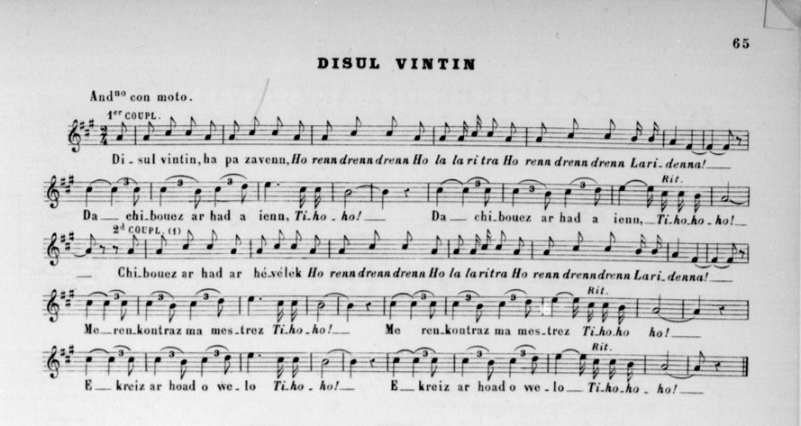
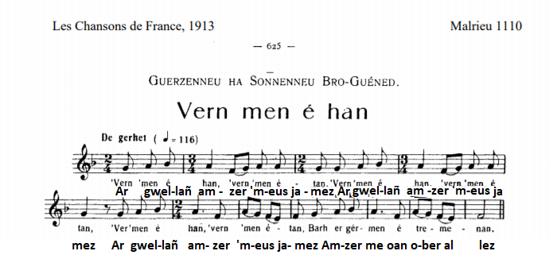
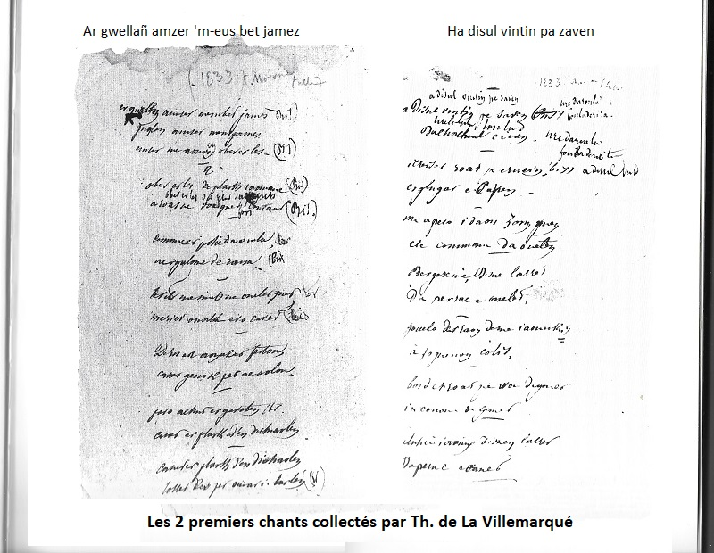

An Ti-ho-ho: Lost ar zon
Fin parodique de "Ti-ho-ho"
A parody ending to "Ti-ho-ho"
Chant tiré du 2ème Carnet de collecte de La Villemarqué (pp. 283).
Mélodie
Arrangement Christian Souchon (c) 2020
|
A propos de la mélodie Ce chant qui ne serait pas du goût du mouvement "Me too" (écrit en 2020) a été maintes fois recueillis, en particulier par Bourgault-Ducoudray qui l'a publié dans "Trente mélodies populaires de Basse-Bretagne", p. 65, (Lemoine et fils, Editeurs - Paris / Bruxelles Novembre 1885) avec traduction française en vers adaptée à la musique par Fr. Coppée. (cf. https://gallica.bnf.fr/ark:/12148/btv1b9064099b/f83.item) Il donne ce commentaire: "Cette mélodie, dont la première phrase a dans sa terminaison une saveur hypodorienne, conclut dans le mode majeur ; elle nen a pas moins un grand caractère. Si lon analyse sa construction rythmigue, on trouve une période de six mesures, dépourvue de pendant et deux phrases de guatre mesures qui se correspondent." Une mélodie aussi originale ne pouvait pas manquer d'être réutilisée. Citons les deux chants les plus fameux qu'elle a inspirés: Alauda signifie « alouette » en gaulois, un mot passé en latin. Ce petit oiseau vole haut, s'élève très rapidement dans le ciel, et son chant clair et perçant est un chant de joie (contrairement à celui du rossignol). Pour les théologiens, le chant de l'alouette représente la joyeuse prière qui monte vers Dieu. L'alouette était un oiseau sacré pour les Gaulois et elle est resté un oiseau de bon augure dans le folklore français (un symbole différent mais aussi important que le coq). On trouvera ci-dessous un court extrait du chant harmonisé par G.Daumas en 1932. Voici le poême de P. Doncoeur: Dans le sillon, au ras du sol / L'alouette a pris son vol, De ses deux ailes palpitant, / Dans le vent pique en chantant, Eperdument, face au soleil, / De sa joie emplit le ciel... A fait chanter guérets et bois / A frémi le cur gaulois... Louve romaine ou léopard / Lourdes aigles de César... Jamais si fort ne grondera / Et si haut ne planera... Et quand la terre tremblera.../ Au tonnerre des combats... Un chant plus clair, fière Alauda/ Dans nos curs tu chanteras Jusqu'à mourir elle a chanté / Et du ciel est retombée... Mais du sillon, au ras du sol / A rebondi dans son vol... A propos du texte Le site "tob.kan.bzh" (classifiaction Malrieu des chants traditionnels bretons) donne les indications suivantes: Référence : M-00368 Titre critique breton : Kanañ a ran ma yaouankiz Titre critique français : Je chante ma jeunesse Titre critique anglais : I sing my youth et il cite 15 versions et 31 occurrences, dont la première partie du chant ci-après. L'existence de ce fragment a été révélée au public par Donatien Laurent dans "La Villemarqué collecteur de chants populaires" (1974), puis "Aux sources du Barzaz Breiz" (1989). Donatien Laurent écrit à ce propos: "Dans une notice adressée en mars 1838 au "Comité littéraire des travaux historiques" sous les auspices duquel il aurait voulu voir publier son recueil, il précise que celui-ci est 'le fruit de dix années de recherches'.[... En réalité] il faut attendre 1833, année où il passe le baccalauréat à Rennes pour trouver les premières traces de son activité d''antiquaire' à la recherche de poésies populaires bretonnes. Il s'agit de 2 petites feuilles l'une simple, l'autre double, sur lesquelles il a noté[...] deux textes de chanson. Une mention postérieure au crayon précise la date de collecte et le nom du chanteur: "1833 - Morvan" [...] Un René Morvan dont la femme Hélène Olivier est l'une des chanteuses mentionnées sur les "Tables des Matières"[...] habitait la ferme dépendant du manoir du Plessix-Nizon. [...] La 1ère n'a guère retenu l'attention des collecteurs; la seconde [...] est bien connue dans tout le domaine français où on la désigne habituellement sous le titre "l'Occasion manquée". Le magnifique site Chants populaires français dédié aux chansons du répertoire traditionnel (fichiers texte et son) comprend une page consacrée à ce thème où l'on trouve 19 chants de ce type auxquels il faut ajouter 9 autres chants cités au chapitre Bergères. Sur cette trentaine de chants, 6 proviennent du Nivernais, 6 du Québec et d'Acadie, 2 de Haute-Bretagne, 2 du Val de Loire, 2 des Landes. Le Béarn, la Cornouaille, la Savoie, l'Anjou, les Ardennes, la Provence, la Bourgogne, le Haut-Quercy, la Haute-Normandie et le Roussilon ont fourni chacun un exemplaire de ce chant, dans des langues et sur des mélodies différentes. 46 ans séparent la collecte de "Disul vintin" (1833) et de sa suite parodique notée après le chant des Baleiniers qui porte la date de septembre 1879 (2ème partie du chant ci-après). L'autre chant est référencé dans la classification Marieu sous le N° M-0110 . Le site "tob.kn.bzh" en cite 10 versions et 17 occurrences. Nous avons reproduit ci-dessous la page correspondante du recueil de Louis Herrieu et l'enregistrement en 2005 de la version collectée par Jean Louis Labourdette |
About the melody This song, which would not be to the liking of the "Me too" movement (written in 2020) was collected many times, in particular by Bourgault-Ducoudray who published it in "Trente mélodies populaires de Basse-Bretagne", p. 65, (Lemoine et fils, Editeurs - Paris / Bruxelles November 1885) with a French translation in verse adapted to the music by Fr. Coppée. (cf. https://gallica.bnf.fr/ark:/12148/btv1b9064099b/f83.item) He gives this comment: "This melody, the first part of which has a hypodorian flavour in its ending, concludes in the major mode; it nevertheless has a great character. If we analyze its rhythmic construction, we find a period of six bars, without a pendant and two matching sentences of four measures. " Such an original melody could not fail to be reused. Let us quote the two most famous songs it inspired: Below is a short excerpt from the song harmonized by G. Daumas in 1932. Here is P. Doncoeur's poem: From the ground soaring to the height / The lark has taken its flight, On its two fluttering wings, / It soars singing in the wind Challengingly facing the sun / Its fills the sky with joyful fun... It made the fields and the woods sing / The proud Gallic hearts inciting ... Come on Roman wolves or leopards / And heavy eagles of Caesar! Never did it soar so high / Or utter so loud a cry ... When the earth shakes and quivers ... / In the bloody fray''s thunder ... Proud Alauda, your clear song, / Deep in our hearts shall resound! Until it died the bird did sing / Now from the sky it is falling ... But from the furrow, from the ground / It bounced back; a huge bound ... About the lyrics The site "tob.kan.bzh" (Malrieu classification of traditional Breton songs) gives the following information: Reference: M-00368 Breton critical title: Kanañ a ran ma yaouankiz French critical title: Je chante ma jeunesse English critical title: I sing my youth and it lists 15 versions and 31 occurrences, including the first part of the song below. The existence of this fragment was revealed to the public by Donatien Laurent in "La Villemarqué, a collector of popular songs" (1974), then in "Aux sources du Barzaz Breiz" (1989). Donatien Laurent writes about this: "In a notice he sent in March 1838 to the" Literary Committee for Historical Work " under whose auspices he would have liked to see his collection published, he specifies that it is 'the fruit of ten years of research'. [... reality] it is not until 1833, when he passed the baccalaureate in Rennes, that the first traces of his activity as a 'paleographer' in search of popular Breton poems are found. These are 2 small sheets, one simple, another double, on which he noted [...] two song texts. A later mention in pencil specifies the date of collection and the singer's name: "1833 - Morvan" [...] A René Morvan whose wife Hélène Olivier is one of the singers mentioned on the "Tables des Matières" [...] lived in the farm attached to Plessix-Nizon manor. [...] The 1st song did not attract the attention of the ensuing collectors. ; the second [...] is well known throughout the French domain where it is usually known under the title "A Missed Opportunity" . The excellent site Chants populaire français dedicated to the traditional repertoire of French songs (text and sound files) includes a page dedicated to this theme where we find 19 songs of this type to which we must add 9 other songs cited in the chapter Shepherdesses . Out of this thirty songs, 6 come from Nivernais, 6 from Quebec and Acadia, 2 from Haute-Bretagne, 2 from Val de Loire, 2 from Landes. Béarn, Cornouaille, Savoie, Anjou, Ardennes, Provence, Burgundy, Haut-Quercy, Haute-Normandie and Roussilon each provided an instance of this piece to be sung in different idioms ??and to different tunes. 46 years separate the recordings of "Disul vintin" (1833) and of its parody suite noted after the song of the Whales which bears the date of September 1879 (2nd part of the song below). The other song is referenced in the Marieu classification under the number M-0110. The site "tob.kn.bzh" cites 10 versions and 17 occurrences of it. We have reproduced below the corresponding page in the collection of Louis Herrieu and the sound recording in 2005 of the version collected by Jean Louis Labourdette |
|
Kan skrivet war ur follenn pleget 1833 - Morvan 1. Ha disul vintin pa zaven Tiredaronla fonladerira Ha disul vintin pa zaven, Da chaseal ez aen Tihoho ! Da chaseal ez aen Tihoho ho ! 2 E-kreiz ar c'hoad pa'z erruen Ur glujar a dapen . 3. Me a bakas he daouzorn gwenn Hi a gomañsas da ouelañ. 4. - Berjerennig, din-me larit, Da berak-ta e ouelit? 5. - Gouelañ a ran d'am yaouankiz A oa ganin hag e kollis.- 6. E bord ar c'hoad pa oa digouet Hi a gomañs da ganañ ge. 7.- Plac'hig yaouank, din-me larit: Da berak-ta e kanit? 8. - Kanañ a ran d'am yaouankiz O oa ganin hag e chomis. 9. - Plac'hig yaouank, distroit en-dro Ha kant skoed ho-pezo. 10. - Nag evit kant, nag evit tri D'ar c'hoad ne'z afen mui. 11. Ar c'heveleg pa vez tapet Hen displuñviñ e vez graet. 12. Ha pa vez bet displuñvet Da boaziñ e vez lakaet. 13. Ar merc'hig pa vez tapet Hanter... Kaier N°2 - p. 283 Lost ar zon "Tihoho" 1. Janedik joaius a gane: Ho ren dren dren drenola laritra O ren dren dren laridenna - Ma enor a chom ganin ! Tihoho ! Ma enor a chom ganin! Tihoho ho! 2. - Gaou a larit, ma c'hoar Janed, Kar c'hwi ho-peus hen kollet. 3.- An deiz all, ' troc'hiñ gwinizh- du Me ne ouzon ket an tu. 4. - Gaou a larit, ma c'hoar Janed N'eo ket eno oa kollet. 5. - An deiz all oan o troc'hiñ kerc'h E oa ar mest bras war ma lerc'h. 6. - Gaou a larit, ma c'hoar Janed N'eo ket eno oa kollet. 7. - An deiz all oan o troc'hiñ mell Oa e-barzh park, an tu ell 8. - Gwir a larit, ma c'hoar Janed Eno eo ho-peus hi kollet! KLT gant Christian Souchon (c) 2020 |
Chanson notée sur une feuille double 1833 - Morvan 1. Dimanche matin me levai. Tiredaronla fonladerira Dimanche matin me levai Et je m'en allai chasser Tihoho ! Et je m'en allai chasser. Tihoho ho ! 2 Quand j'arrive au milieu du bois: Belle perdrix que voilà! . 3. Quand ses deux mains blanches je pris. A pleurer elle se mit . 4. - Jolie bergère, dites-moi, Vous pleurez, dites pourquoi! 5. - Ma jeunesse va s'envoler Il y a là de quoi pleurer. - 6. Arrivée à l'orée du bois Elle chante à pleine voix. 7.- Jeune fille, dites-moi tout: Dites, pourquoi chantez-vous? 8. - Ma jeunesse était menacée. Voilà que je l'ai gardée. 9. - Jeune fille, retournez-y Je vous donnerai cent louis. 10. - Ni pour cent, ni trois cents écus Dans le bois je n'irai plus. 11. La bécasse dès qu'on la tient On la plume, sachez bien. 12. Dès qu'on l'a plumée, aussitôt On la met à cuire au pot. 13. La fille qu'on peut attraper ... Carnet N°2 - p. 283 Fin parodique de "Tihoho" 1. Jeannette joyeuse chantait: Ho ren dren dren drenola laritra O ren dren dren laridenna - Mon honneur j'ai conservé! Tihoho ! Mon honneur j'ai conservé! Tihoho ho! 2. - Ma soeur, mensonge que cela:, Vous l'avez perdu, ma foi. 3.- L'autre jour, je coupais du blé Noir. Ne sais plus où c'était.. 4. - Ma soeur, mensonge que cela: Pour sûr, ce n'était point là. 5. - C'était de l'avoine je crois. Le maître était après moi. 6. - Ma soeur, mensonge que cela: Pour sûr ce n'était point là. 7. - L'autre jour, je coupais du mil Dans le champ près du courtil 8. - Jeannette, c'est la vérité: C'est là qu'on vous l'a volé! Traduction Christian Souchon (c) 2020 |
Song written on a loose foolscap sheet 1833 - Morvan 1. Last Sunday morning I got up. Tiredaronla fonladerira Last Sunday morning I got up I went hunting with my pup Tihoho! I went hunting with my pup. Tihoho ho! 2 I got to the midst of the wood Caught a partridge in her hood . 3. I take her by her two white hands. She starts to cry and withstand . 4. - Shepherdess, shepherdess tell me, Why d'you cry so bitterly? 5. - I'm mourning for my youth that's spent And for the wrong way I went.- 6. We got to the edge of the wood Now she sang in a gay mood. 7.- Young girl, young girl, will you tell me: Why d'you sing so merrily? 8. - My youth was in danger of rapt. I sing my youth that I've kept. 9. - Back to the wood, girl, let's go round I'll give you a hundred crowns. 10. - Neither for a hundred nor for Three hundred crowns! Nevermore. 11. A woodhen, once you have caught her You must pluck her quickly, Sir. 12. And once you have plucked it, it's time You had it cooked. The meat is prime! 13. Know that when you have caught a girl Your flag at once you should unfurl... - Notebook N ° 2 - p. 283 Parody end of the "Tihoho" song 1. Hear! What does sing merry Jenny? Ho ren dren dren drenola laritra O ren dren dren laridenna - My honour I've kept luckily! Tihoho! My honour I've kept luckily! Tihoho ho! 2. - My sister Jenny, that's a lie :, You've lost it and you should cry. 3.- When sickling buckwheat th'other day I don't know where anyway... 4. - My sister Jenny, that's a lie: That's not the place. Tell me why! 5. - Right, I was sickling oats surely. And the boss ran after me. 6. - My sister Jenny that's a lie: That's not the place. Tell me why!. 7. - The other day in yonder weald I cut millet in the field. 8. - Jenny now what you say is true: There it was stolen from you! |
Premier chant collecté par Th. de La Villemarqué en 1833
First song recorded by La Villemarqué in 1833

Vern men é han (Guerzenneu ha sonnenneu Bro Guéned, Loeiz Herrieu )
"Dilezet" (Labourdette, "Chants traditionnels vannetais")
|
1. Han dem e hent ag er gér-men Nhani garan dé ket amen 2 Nhani garan zou diméet Me garehé ma nvé ket bet... |
1. De cette ville je m'en vais Celle que j'aime l'a quittée; 2. Celle que j'aime s'est mariée Oh, ne l'eût-elle été jamais! |
|
Kan skrivet war ur follenn simpl 1833 - Morvan 1. Ar gwellañ amzer 'm-eus jamez (bis) Ar gwellañ amzer 'm-eus jamez Amzer me oan ' ober al lez (bis) 2. Ober al lez d'ur plac'h yaouank (ter) Ha c'hoazh ne oa ket forzh kontant. (bis) 3. Komañs ar paotrig da ouelañ (ter) Hag e galonig da rannañ. (bis) 4. - Tavit ma mab, na ouelit ket! (ter) Merc'hed awalc'h a vo kavet. (bis) 5. Erru an hañv hag ar festoù: Kasit ganeoc'h per hag av'loù! 6. Pa vo echu ar gavotenn Kasit ar plac'h d'an dizheolenn! 7. Kasit ar plac'h d'an dizheolenn! Taolit de(zh)i per war he barlenn (bis) 8. Pa 'z afec'h ganti ober ar bal, C'hwi wasko start war he daouzorn. 9. Parlantit de(zh)i a zimezi Gant aon d'ober gwall barti. 10. - Me 'm-eus ur galonig ken ge, Evel d'ur rozenn d'ar viz Mae 11. Evel d'ur rozenn d'ar viz Mae Evel d'un eostig a gan ge. 12. - Galant, galant, pellait ouzhin! Me gavo 'n eil hag a blij din. 13. Vildailh a gavan ar baotred Deuet da garout nep o gar ket. - KLT gant Christian Souchon (c) 2020 |
Chanson notée sur une feuille simple 1833 - Morvan 1. - Le meilleur temps que j'eus jamais (bis) Le meilleur temps que j'eus jamais Fut le temps où je courtisais (bis) 2. Courtisais une belle enfant (ter) Dont le coeur était réticent. - (bis) 3. Voilà que le gars fond en pleurs (ter) En pleurs à fendre le coeur. (bis) 4. - Du calme, assez de pleurs mon gars! (ter) Des filles il n'en manque pas. (bis) 5. Poires et pommes apportez Aux fêtes qu'on donne en été! 6. Le tour de gavotte achevé Tous deux à l'ombre vous irez! 7. Et de poires vous remplirez! A ras-bord son blanc tablier (bis) 8. Et pendant la danse il convient, Que vous lui serriez les deux mains. 9. En lui parlant de mariage De peur qu'on croie au badinage. 10. - Je me sens le coeur aussi gai, Que la rose en plein mois de mai 11. Ou bien encor qu'un rossignol Modulant dièses et bémols. 12. - Bonimenteur, vade retro! Je choisis l'amant qu'il me faut 13. Et me moque des amoureux Aimant quand on ne veut point d'eux. - Traduction Christian Souchon (c) 2020 |
Song written on a loose single sheet 1833 - Morvan 1. 1. - The best time that I ever had (twice) The best time that I ever had Was when I was a wooing lad (twice) 2. Was courting a beautiful girl (thrice) A heart reluctant to unfurl. - (twice) 3. The lad woke crying with a start: (thrice) Bitter tears apt to break one's heart. (twice) 4. - Your fears, boy, I can assuage! (thrice) Of nice girls there is no shortage. (twice) 5. Apples and pears you shall offer: On parties given in summer! 6. Once a full gavotte tour is made. You must lead the girl to the shade. 7. She will sit down. You'll fill with pears, Her apron till it almost tears. (bis) 8. While dancing it's appropriate, To press the hands of your fair mate 9. And lest she would suspect banter. You should propose marriage to her. - 10. - Look here, my heart is full of glee As is a rose in the month May 11. A rose or else a nightingale Modulating her charming tale... -. 12. - Skirt-chaser, O, away with you! I'll find someone I love, I'll do 13. At lovers like you I just scoff Who bide by unrequited love. - |

La Chasse aux Loups (Th. Botrel)
L'Alauda (RP. Paul Doncoeur)